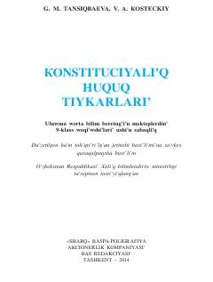

KH9-sinf o'quvchilari uchun Konstitutsiyaviy huquq asoslari bo'yicha o'quv qo'llanma.
Ushbu darslik 9-sinf o'quvchilari uchun mo'ljallangan bo'lib, O'zbekiston Respublikasi Konstitutsiyaviy huquq asoslari haqida ma'lumot beradi. Kitobda huquqiy madaniyat, davlat tuzilishi va fuqarolarning huquq hamda majburiyatlari tushuntirilgan.